Hi,
I'm Rony*
Technical Support & Helpdesk Specialist with 4+ years of experience handling enterprise systems, incident management, and SLA-driven operations for national-scale clients.
4+
Years Experience
10+
Enterprise Clients
5+
Products Supported
3+
Dev Projects
Technical Support
Troubleshooting, incident management, and root cause analysis for enterprise applications.
Helpdesk Operations
SLA-driven ticket management and technical assistance for end users.
Web Development
Functional web apps with HTML, CSS, PHP, and MySQL from design to deployment.
Cross-Team Coordination
Bridging developers, account managers, and business teams for smooth delivery.
Bookmark Manager
Privacy-first browser bookmark manager with IndexedDB — folder hierarchy, duplicate detection, domain analytics.
InstaAnalyzer
Browser-based Instagram data analyzer — processes export files locally with zero server uploads.
DSS — Fogging Area Prioritization
Decision support system for health agencies using TOPSIS method to prioritize fogging areas.
DSS — Ginger Farmland Selection (AHP-TOPSIS)
Decision support system for selecting optimal ginger farmland in Gunungkidul using combined AHP-TOPSIS methods.
Ready to work together?
I'm open to new opportunities, collaborations, and interesting projects.
I am an Information Technology professional with a Bachelor's degree in Informatics and experience spanning technical support, helpdesk operations, customer experience, system administration, and web development. My career began in customer service and digital customer support before evolving into technical support and helpdesk roles focused on incident handling, troubleshooting, root-cause analysis, and the implementation of technology solutions for large-scale organizations. With a strong foundation in computer networking, system development, and customer service management, I thrive in dynamic, collaborative, and solution-oriented environments. I have a strong passion for technology, web application development, and user experience improvement, with a commitment to continuous learning, adaptability, and delivering practical solutions that create meaningful value for both users and organizations.
Technical Support / Helpdesk Specialist
Nov 2022 – PresentIvosights · Jakarta / Hybrid
Handling technical troubleshooting, incident management, and client coordination for enterprise products including Sociomile Omni, Sociomile Voice, IVO WABA, and Ripple10.
Customer Service
Oct 2022 – Nov 2022Ivosights BPO (Karier.mu Project)
Providing chat-based customer service, handling user inquiries and resolving issues in accordance with service procedures.
Customer Engagement Champion
Oct 2021 – May 2022PT VADS Indonesia (Ajaib Project)
Handling customer service via chat platform, assisting users with service issues and providing accurate product information.
Administration Intern
2019PT Yogya Kristal Sejati
Developed a warehouse data management system and supported day-to-day administrative and operational activities.
Server / Waiter
2017 – 2018Nagoya Japanese Fusion Resto
Delivered quality customer service and supported daily restaurant operations.
Bachelor's Degree — Informatics
2016 – 2021Universitas PGRI Yogyakarta · GPA 3.61 / 4.00 · Final Thesis: "Decision Support System for Fogging Area Determination in Jetis District, Yogyakarta."
Computer and Network Engineering
2013 – 2016SMK Tamansiswa Jetis Yogyakarta.
Technical Support & IT Operations
Web Development
Soft Skills
Tools
Academic Achievement
Bachelor's Degree in Informatics — Universitas PGRI Yogyakarta · Graduated 2021 · GPA 3.61 / 4.00
Professional Achievement
Handled technical support for national enterprise clients, consistently met SLA standards, and served as part of a 24/7 helpdesk operations team.
English Proficiency Test
Certification of English language proficiency — 2019
Digital Business Skills
Sertifikat Kompetensi Keterampilan Bisnis Digital — 2019
Graduated from Vocational High School
Completed secondary education at SMK Tamansiswa Jetis Yogyakarta, majoring in Computer and Network Engineering.
First Work Experience
Began first professional experience as a waiter in the F&B industry, developing strong interpersonal and customer service skills.
Joined University Cooperative
Joined the Student Cooperative of Universitas PGRI Yogyakarta as Administration and Public Relations Staff.
Internship in System Development
Completed an internship at PT Yogya Kristal Sejati as an Admin and Warehouse Data System Developer.
Completed Bachelor's Degree
Graduated with a Bachelor's Degree in Informatics from Universitas PGRI Yogyakarta with a GPA of 3.61.
Entered the Digital Support Industry
Started a professional career in the customer engagement support field for digital platforms.
Joined Ivosights as Technical Support
Joined Ivosights as a Technical Support specialist, handling troubleshooting, incident management, and client coordination.
Enterprise Product Support
Handled implementations and support for Sociomile Omni, Sociomile Voice, IVO WABA, and Ripple10 across national enterprise clients.
Transitioned to Helpdesk Specialist
Transitioned to the Customer Experience & Growth division as a Helpdesk Specialist, focusing on SLA compliance and user satisfaction.
Technical Support
Handling technical issues related to applications and systems, performing troubleshooting and root cause analysis to resolve incidents effectively.
- Incident triage & resolution
- Root cause analysis reports
- Remote & on-site troubleshooting
- System log review & diagnosis
Helpdesk Operations
Providing technical assistance to end users, managing tickets and service requests in accordance with SLA standards, and ensuring timely resolution.
- SLA-compliant ticket handling
- End-user technical assistance
- Service request management
- 24/7 operational support
Web Development
Building functional web applications using HTML, CSS, PHP, and MySQL — from requirements analysis and system design through to implementation.
- Requirements analysis & planning
- Responsive front-end development
- PHP & MySQL back-end systems
- CRUD & data management apps
Cross-Team Coordination
Coordinating with developer, account manager, and business teams to ensure smooth service delivery, accurate escalation, and well-documented resolution processes.
- Escalation management
- Cross-functional communication
- Resolution documentation
- Client-facing coordination
Receive Request
Receiving tickets, reports, or service requests from users through the designated support channel.
Analyze
Conducting an initial investigation and identifying the root cause of the reported issue.
Troubleshoot
Checking system logs, configurations, and related data to identify and isolate the source of the problem.
Resolve
Providing a direct solution or performing corrective actions to restore normal service operation.
Escalate
Escalating to the relevant team when the issue requires higher-level expertise or cross-team involvement.
Validate
Confirming with the user that the solution is working correctly and that the issue has been fully resolved.
Document
Recording the resolution details and updating the ticket status to maintain accurate service records.
Support Tools
Web Development
Productivity
Design
I actively explore AI-assisted workflows — from prompt engineering and content generation to image enhancement and intelligent automation systems. My goal is to leverage these tools to improve productivity, accelerate creative output, and build smarter digital experiences that feel effortless to use.
Bookmark Manager
Privacy-first browser bookmark manager with local storage using IndexedDB. Supports folder hierarchy, duplicate detection, and domain analytics.
InstaAnalyzer
Browser-based Instagram data analysis app that processes Instagram export files locally without uploading data to any server. Privacy-first architecture.
DSS — Fogging Area Prioritization
Decision support system to help health agencies determine priority areas for fogging operations based on health and environmental parameters using the TOPSIS method.
DSS — Ginger Farmland Selection (AHP-TOPSIS)
Decision support system for selecting optimal ginger farmland in Gunungkidul using combined AHP-TOPSIS methods.
Bookmark Manager
A privacy-first browser bookmark manager with local storage using IndexedDB. Features include bookmark import/export, folder hierarchy, duplicate detection, domain analytics, multi-language support, and dark mode — all processed locally with no server uploads.
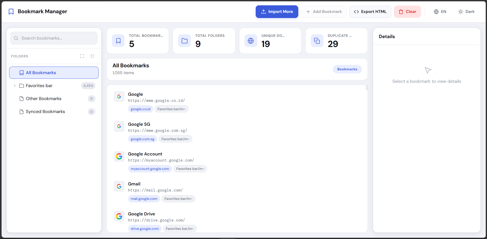
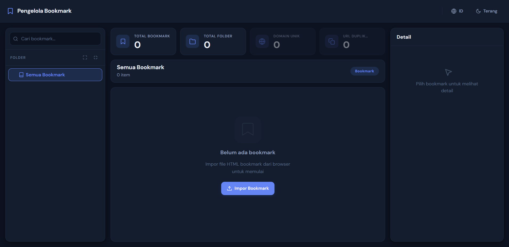
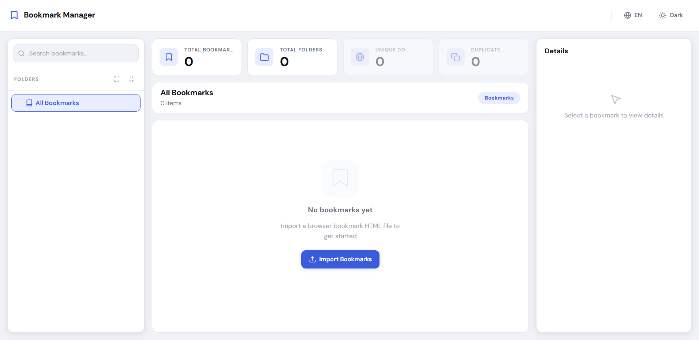
InstaAnalyzer
Browser-based Instagram data analysis app that processes Instagram export ZIP files entirely on the client side. Features followers analysis, following analysis, fan detection, and local-only processing with zero server uploads — built with a privacy-first architecture.

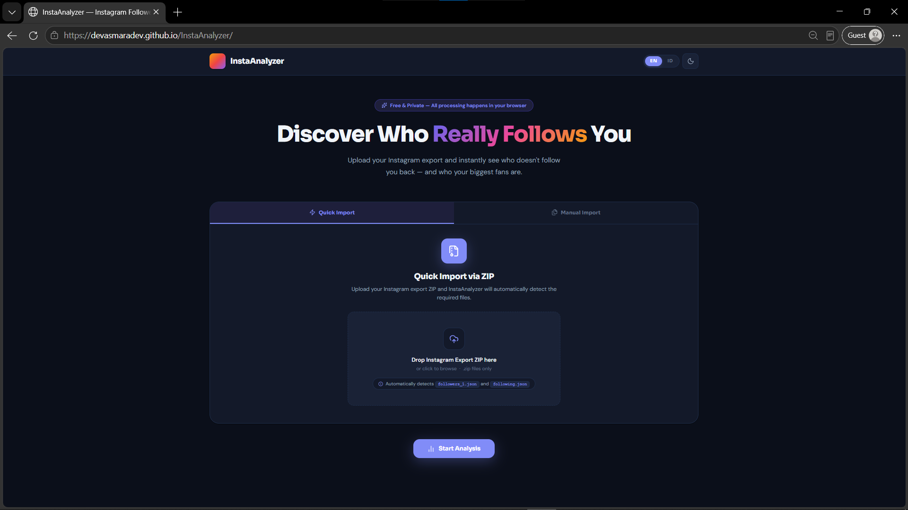
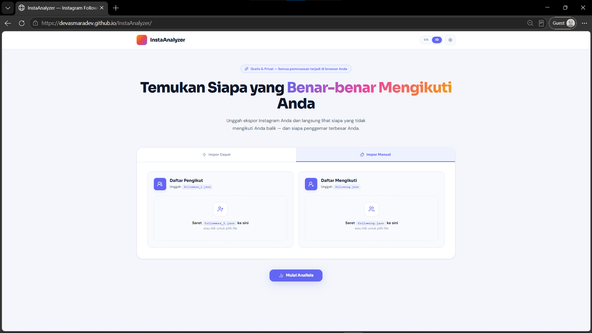
DSS — Fogging Area Prioritization
Decision support system to help health agencies determine priority areas for fogging operations based on health and environmental parameters using the TOPSIS method.
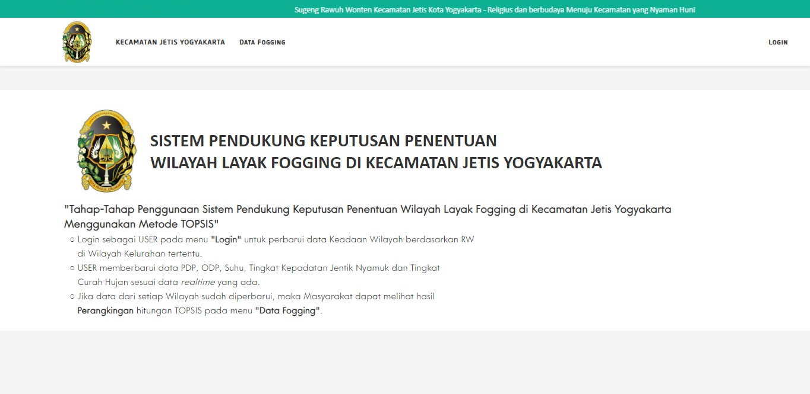
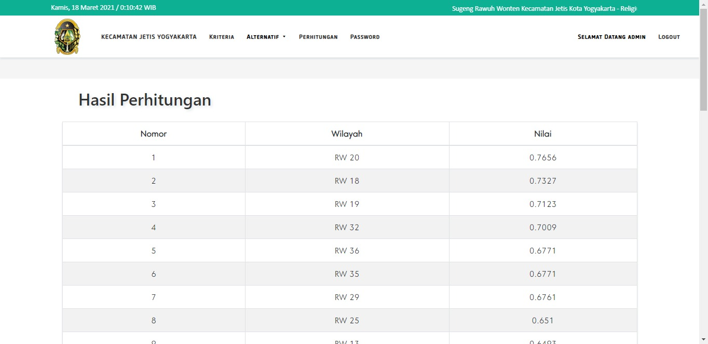
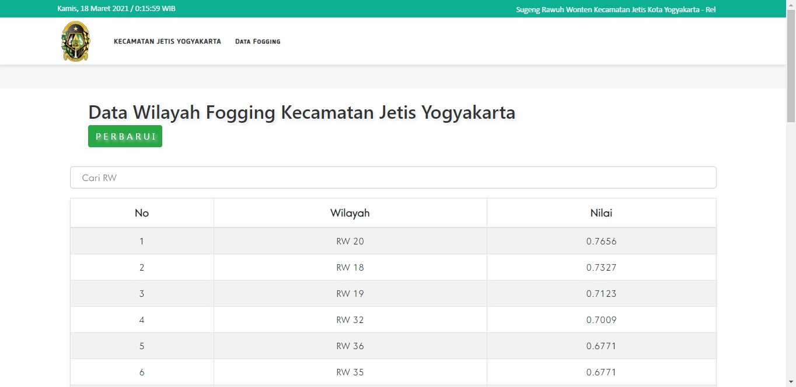
DSS — Ginger Farmland Selection (AHP-TOPSIS)
Decision support system developed to help agricultural stakeholders in Gunungkidul Regency select the most suitable land for ginger cultivation. The system combines the Analytical Hierarchy Process (AHP) for criteria weighting with TOPSIS for ranking and selecting the optimal land alternatives based on soil quality, land area, accessibility, water availability, and other agricultural criteria.
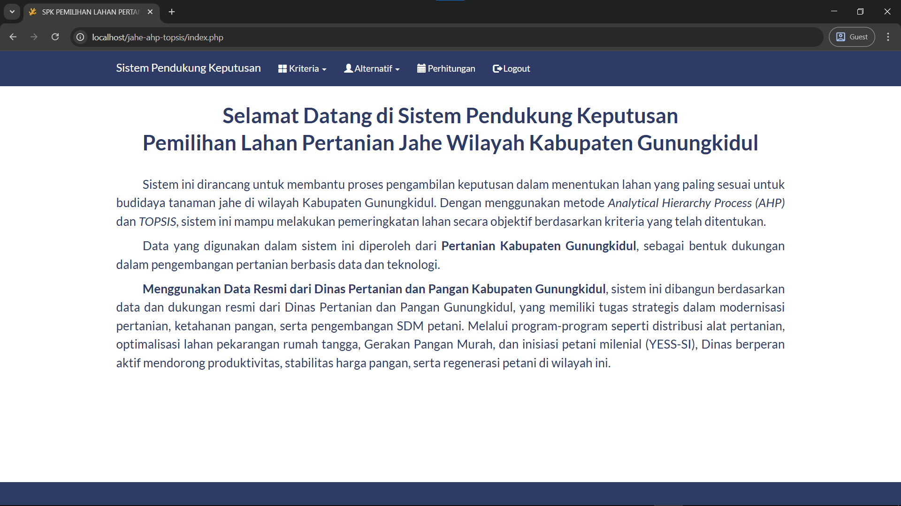
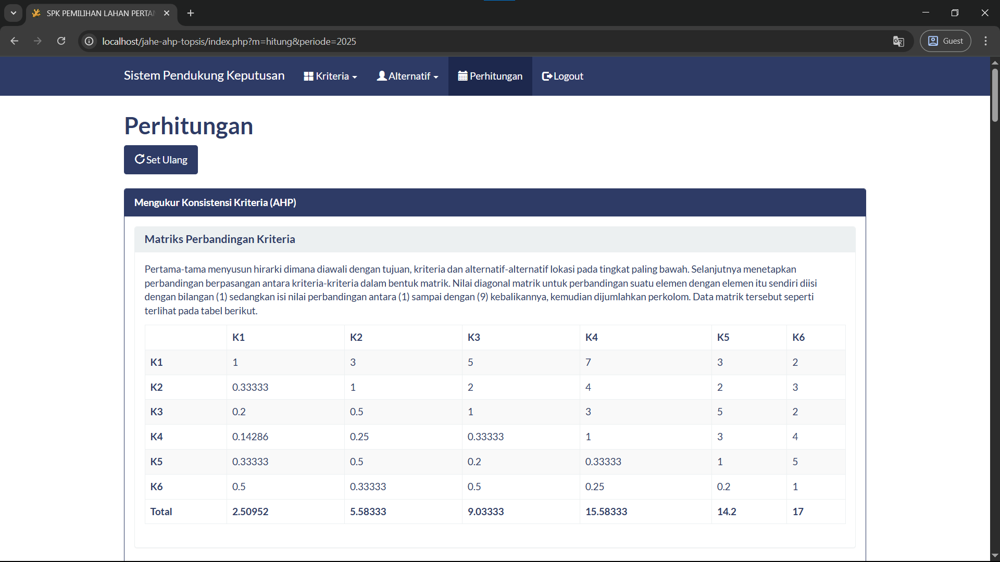
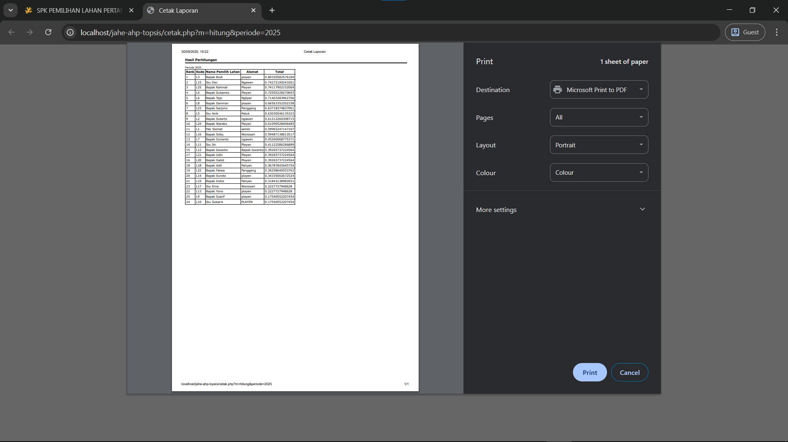
Warehouse Administration System
Warehouse data recording system built during internship at PT Yogya Kristal Sejati to support inventory management and data administration.
DSS — Village Cash Assistance Recipients
Decision support system to help village governments determine eligible recipients for direct cash assistance (BLT) based on established criteria using the TOPSIS method.
Expert System — Oyster Mushroom Diagnosis
Expert system to help users identify pests and diseases in oyster mushroom cultivation and provide handling recommendations.